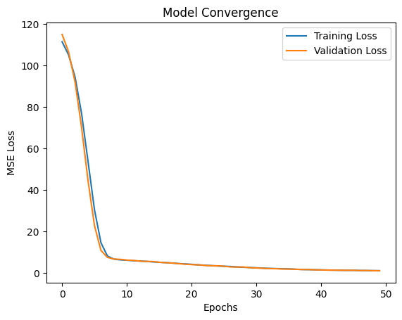

Neural Networks (Deep Learning) consist of layers of “neurons” that pass signals to one another. Unlike previous models, NNs can learn nearly any mathematical function by adjusting weights through a process called Backpropagation.
Input Layer: Receives the features.
Hidden Layers: Perform non-linear transformations using Activation Functions (like ReLU).
Output Layer: Provides the final prediction.
1. Generating High-Complexity Synthetic Data
Neural Networks are “data hungry.” To make a Neural Network worth using, we need a problem that is too complex for simple linear models to solve.
We will generate 2,000 samples with three features (\(x_1, x_2, x_3\)) and a target (\(y\)) that follows a non-linear “saddle” function: \[y = x_1^2 - x_2^2 + \sin(x_3) + \text{noise}\]
Code
import numpy as npimport pandas as pdimport matplotlib.pyplot as pltimport tensorflow as tffrom tensorflow.keras.models import Sequentialfrom tensorflow.keras.layers import Densefrom sklearn.model_selection import train_test_splitfrom sklearn.preprocessing import StandardScaler# Generate 2,000 samples (NNs need more data)np.random.seed(42)n_samples =2000X = np.random.uniform(-5, 5, (n_samples, 3))# Target: A complex interaction of the features# y = x1^2 - x2^2 + sin(x3) + noisey = X[:, 0]**2- X[:, 1]**2+ np.sin(X[:, 2]) + np.random.normal(0, 0.5, n_samples)
2. Feature Scaling & Data Splitting
The Importance of Scaling
Neural Networks learn by adjusting “weights” through Gradient Descent. If your features have different ranges, the gradients can become unstable, causing the model to take forever to learn or even fail entirely.
We use StandardScaler to transform our data so that: * Mean = 0 * Standard Deviation = 1
This creates a “level playing field” for all input features.
Code
# Neural Networks are sensitive to scale!scaler = StandardScaler()X_scaled = scaler.fit_transform(X)X_train, X_test, y_train, y_test = train_test_split(X_scaled, y, test_size=0.2)
3. Building the Neural Network (The “Brain”)
We are using a Sequential model, which means our data flows in one direction through a series of layers.
The Layers:
Input Layer: Designed to receive our 3 features (\(x_1, x_2, x_3\)).
Hidden Layer 1 (64 Neurons): Uses the ReLU activation function. This is the “magic” that allows the network to learn non-linear patterns like our saddle shape.
Hidden Layer 2 (32 Neurons): A second layer to refine the patterns identified in the first layer.
Output Layer (1 Neuron): Since this is a Regression task (predicting a number), the final layer has a single neuron with no activation function.
Activation Functions: ReLU
We use ReLU (Rectified Linear Unit) because it is computationally efficient and helps prevent the “vanishing gradient” problem, allowing deeper networks to learn faster.
Code
model = Sequential([ Dense(64, activation='relu', input_shape=(3,)), Dense(32, activation='relu'), Dense(1) # Final output])model.compile(optimizer='adam', loss='mse', metrics=['mae'])model.summary()
/usr/local/lib/python3.12/dist-packages/keras/src/layers/core/dense.py:93: UserWarning: Do not pass an `input_shape`/`input_dim` argument to a layer. When using Sequential models, prefer using an `Input(shape)` object as the first layer in the model instead.
super().__init__(activity_regularizer=activity_regularizer, **kwargs)
Now we “fit” the model to our data. Unlike simpler models that solve in one go, Neural Networks learn iteratively over several passes.
Epochs (50): The number of times the model will see the entire training dataset.
Batch Size (32): The model doesn’t look at all 1,600 training points at once; it looks at 32 at a time, updates its weights, and moves on. This makes training faster and more stable.
Validation Split (0.2): We hold back 20% of the training data as a “mini-test” during each epoch. This helps us see if the model is learning general patterns or just memorizing the training data (Overfitting).
Code
history = model.fit( X_train, y_train, validation_split=0.2, epochs=50, batch_size=32, verbose=0# Keep the notebook clean)# Plotting the Learning Curveplt.plot(history.history['loss'], label='Training Loss')plt.plot(history.history['val_loss'], label='Validation Loss')plt.title('Model Convergence')plt.xlabel('Epochs')plt.ylabel('MSE Loss')plt.legend()plt.show()

7. Evaluating the Neural Network
Now that the training is complete, we put our model to the test. We use the Test Set (data the model has never seen) to calculate our final performance metrics.
R-squared (\(R^2\)): Tells us how much of the complex “saddle” shape variance the model captured. For this non-linear data, a high \(R^2\) demonstrates that the hidden layers successfully learned the mathematical interactions between \(x_1, x_2\), and \(x_3\).
MAE (Mean Absolute Error): Represents the average physical distance between our model’s predictions and the actual values.
8. Analyzing the Results: The Power of Deep Learning
An \(R^2\) of 0.99 indicates that the model has captured 99% of the variance in our complex dataset. This is a significant jump compared to what a linear model would achieve on the same data.
High Precision: An MAE of 0.87 relative to the range of our target variable shows that the “neurons” have successfully approximated the non-linear saddle function.
Generalization: Since our Validation Loss and Test Metrics are both strong, we know the model didn’t just “memorize” the training points (overfitting)—it actually learned the underlying physics of the data.
Final Verdict: Neural Networks
While the performance is the highest we’ve seen, it’s important to remember the “cost” of this accuracy:
Factor
Observation
Compute Power
This model required 50 iterations (epochs) to reach this result.
Data Scaling
Without the StandardScaler, this model would likely have failed.
Interpretability
We know the model is accurate, but we can’t “read” the weights like a simple slope in Linear Regression.